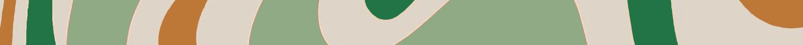

⤜Erin De Witt's Portfolio⤛
Advanced Computer Science
Dice
The point of this project was to create a computer program that involves the creation of dice using random numbers. I ended up creating a program that start with a one by one grid of dice which grows every three times the screen is clicked. Once the grid is ten by ten then begins to shrink back down to a one by one grid.
For me the most difficult part of this project was find the best way to draw the dice using the least number of lines of code. My first version of my code used six functions to draw my pips. I decided that this took too many lines and created a second version of my code that used arrays to draw my pips. I created one array that stored all seven posible pip positions. Next I created an array for each number that can be rolled. In this array I stored the red, green, and blue values for that number and weather or not the dot would actually be displayed (full opacity or none).
v3